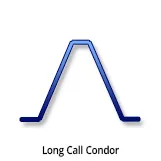
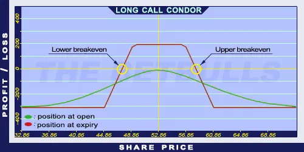

Description and use

Condors in the Long Call Condor option are almost similar to the longed butterflies, but the two middle components have different strike prices. It is the opposite of the Short Call Condor strategy. This strategy is popular, even though it is a net debit investment. The popularity is from the attractive risk/profit ratio. To establish the position, the trader must buy a lower strike ITM Long Call, in the middle there must be a lower strike ITM Short Call and a higher strike OTM Short Call, and finally, the trader must buy a higher strike OTM Long Call option. The investor can profit from share prices moving within given limits. The risk/profit ratio and the profit range is wider than for Long Butterfly Strategy. The direction of the market is neutral. The investor speculates on shares with low volatility and small price changes. The expected profit is relatively high, given the low costs. The expiration should be at least three months.
- Type: Neutral
- Transaction type: Debit
- Maximum profit: Limited
- Maximum loss: Limited
- Strategy: Neutral strategy
Opening the Position
Long Call Condor Option Positions
- Buy a lower strike (ITM) Call option.
- Sell a middle lower strike (ITM) Call option.
- Sell a middle higher strike (OTM) Call option.
- Buy a higher strike (OTM) Call option.
All components must have the same expiration and only Call options are used. The difference between the strike prices must be equal.
Steps
Entry:
- Make sure the share prices are moving within certain limits.
Exit:
- The position can be closed only before expiration.
Basic Characteristics
- Maximum loss: Net debit.
- Maximum profit: Difference of two consecutive strike prices - Net debit.
- Time decay: Time decay has a positive effect on the value when the position is profitable, and a negative effect when the position is lossmaking.
- Lower breakeven point: Lower strike price + Net debit.
- Upper breakeven point: Higher strike price - Net debit.
Advantages and Disadvantages
Advantages:
- It is profitable when the prices are moving within certain limits and the costs are low.
- Low and limited risk.
- Relatively high risk/profit ratio.
Disadvantages:
- Potentially higher profit is only possible close to expiration.
- Limited profit.
Closing the Position
Buy back the Short Calls and sell the Long Calls.
Mitigation of Losses
Close the position the above-mentioned way.
Example

Long Call Condor strategy example with ABCD traded for $52.87 on 17. 05. 2017. The investor engages in the following:
- Buy a Long Call option with a strike price of $45.00, expiring in June 2017, for a premium of $8.52.
- Sell a Short Call option with a strike price of $50.00, expiring in June 2017, for a premium of $4.82.
- Sell another Short Call option with a strike price of $55.00, expiring in June 2017, for a premium of $2.34.
- Buy another Long Call option with a strike price of $60.00, expiring in June 2017, for a premium of $0.98.
- Net debit: $2.34
- Maximum loss: $2.34
- Maximum profit: $2.66
- Lower breakeven point: $47.34
- Upper breakeven point: $57.66